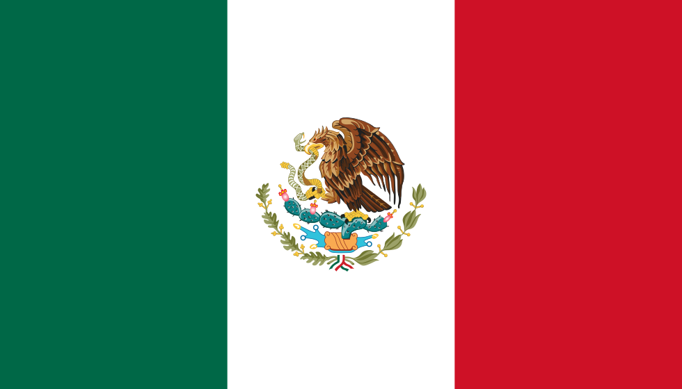

Au sens strict, une devise est une unité monétaire acceptée par un pays étranger, tandis que la « monnaie » est celle de son pays.
L'euro (€) est la monnaie unique de l'union économique et monétaire,
formée au sein de l'Union européenne; elle est commune à dix-neuf États
membres de l'Union européenne qui forment ainsi la zone euro.
La livre sterling (en anglais : pound sterling), souvent abrégée en livre (pound),
est l'unité monétaire officielle du Royaume-Uni,
des dépendances de la Couronne britannique,
et des territoires britanniques d'outre-mer.
Le dollar des États-Unis ou dollar américain ou dollar US ou USD est la
monnaie nationale des États-Unis et de ses territoires d'outre-mer (comme Porto Rico) ;
c'est aussi celle de l'Équateur, du Zimbabwe, des États fédérés de Micronésie, des Îles Marshall, et bien d'autres
Le yen (円) est la monnaie officielle du Japon.
Il a été créé par une loi du 10 mai 18712, pour remplacer le ryō (両).
Le yen avait deux subdivisions, le sen (1/100) et le rin (1/1000). Néanmoins ces subdivisions ne sont plus utilisées depuis 1954.

Le peso (de l'espagnol : poids) ($) est le nom de plusieurs monnaies de cours légal dans sept pays d'Amérique
(Argentine, Chili, Colombie, Cuba, République dominicaine, Mexique, Uruguay) et aux Philippines1,
qui ont différentes valeurs.
Le dollar canadien (symbole monétaire : $ ; code ISO 4217 :
CAD ; localement, CAN, $CA et $C sont utilisésNote 1,2,3)
est la devise officielle du Canada depuis 1858. Il est subdivisé en 100 cents (¢).
Le franc, précisé franc suisse lorsqu'il peut y avoir ambiguïté
, est la monnaie utilisée en Suisse et au Liechtenstein. Il est composé de 100 centimes
Le shekel hadash est la monnaie nationale de l’État d’Israël. Son symbole monétaire est ₪,
combinaison des premières lettres des mots shekel (ש) and ẖadash (ח) (nouveau).
Le shekel est divisé en 100 agorot, pluriel d’agora, qui vient d’un mot akkadien (Mésopotamie) et signifie graine.
Le yuan (chinois simplifié : 元 ; pinyin : yuán) « la monnaie du peuple » ; abrv. RMB ;
symbole monétaire : ¥) est la devise nationale de la république populaire de Chine à l'exception
des régions administratives spéciales de Hong Kong et de Macao
Le rouble russe (en russe : российский рубль),
est l'unité monétaire de la Fédération de Russie depuis le 1er janvier 1993.
Son symbole ₽ est devenu officiel le 11 décembre 2013. Il est divisé en 100 kopecks.